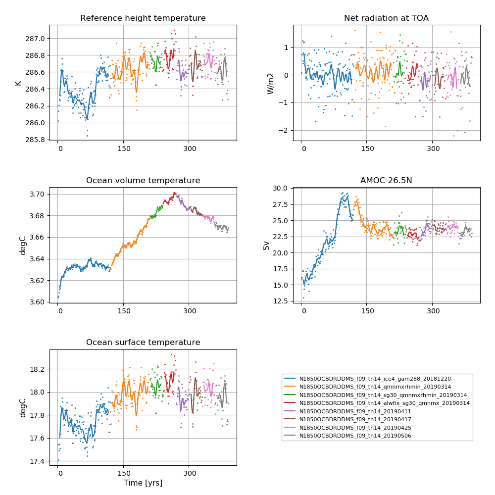
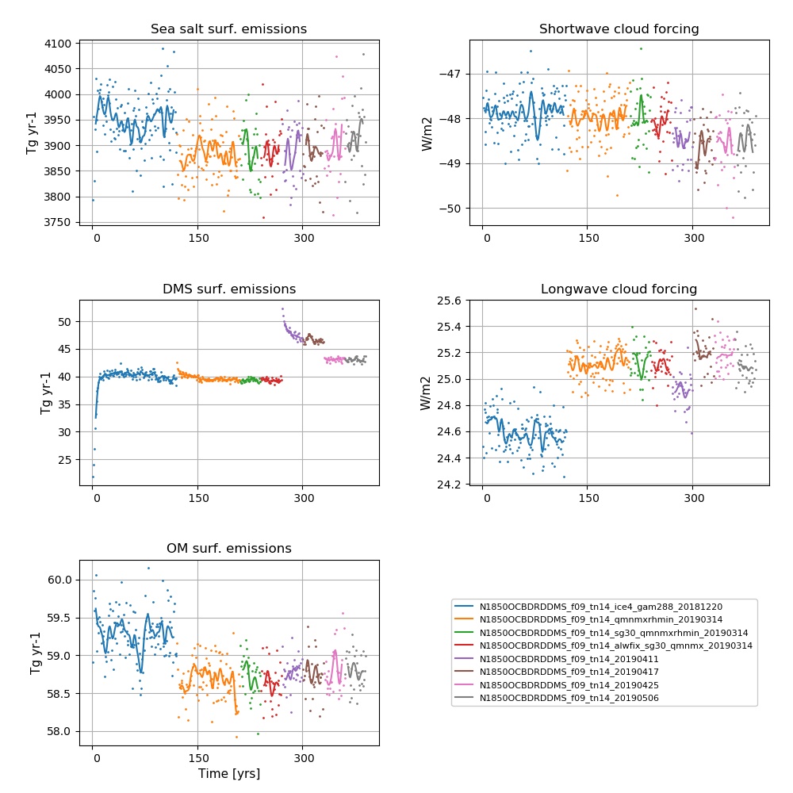

N1850OCBDRDDMS_f09_tn14_20190506
Contents
N1850OCBDRDDMS_f09_tn14_20190506#
Data storage#
The data is stored on NIRD @ sigma2
/projects/NS2345K/noresm/cases/N1850OCBDRDDMS_f09_tn14_20190506
Path to case directory#
on Fram @ sigma2
/cluster/projects/nn2345k/matsbn/NorESM/cases/N1850OCBDRDDMS_f09_tn14_20190506/
Path to diagnostics#
http://ns2345k.web.sigma2.no/diagnostics/noresm/common/N1850OCBDRDDMS_f09_tn14_20190506/
Summary of simulation#
New in this simulation:
To allow geometry modifications with respect to standard FV to be turned off, modification included as SourceMods/src.cam to
cd_core.F90, d2a3dikj.F90,dp_coupling.F90, dynamics_vars.F90, dyn_comp.F90, sw_core.F90, te_map.F90, uv3s_update.F90
New name list avriable added to user_nl_cam: fv_am_geom_crrct = .false.
Continued to use:
the increased (x2) error tolerance in energy conservation test in CICE
the long wave aerosol optical depth (AOD) bug fixer optinterpol.F90 included as SourceMod
the updated emission files for CAM6-Nor (often referred to as FRC2)
the increase in DMS emissions @ high latitudes in order to reduce the net radiation imbalance @TOM (top of model)
the increase in width of Strait of Gibraltar from 15 km to 30 km
the modifications to the parameterisation of ice clouds (iceopt=5 and cldfrc2m.F90)
the modifications to the parameters bkopal, rcalc and ropal in iHAMOCC included as SourceMod
the modifications to the convection code included as SourceMod: zm_conv.F90: “zmst” modifications.
aerotab_table_dir = ‘/cluster/shared/noresm/inputdata/noresm-only/atm/cam/camoslo/AeroTab_8jun17’
For all SourceMods and user name list specifics, see bottom of this page
Simulation specifics#
CESM parent |
CESM2.0.0 |
Parent |
N1850OCBDRDDMS_f09_tn14_20190425 |
Run type |
branch |
Branch time from parent |
01-01-0361 |
Simulated years |
01-01-0361 - 31-12-0390 |
Compset |
1850_CAM60%PTAERO_CLM50%BGC-CROP_CICE_MICOM%ECO_MOSART_SGLC_SWAV_BGC%BDRDDMS |
Git branch |
featureCESM2-OsloDevelopment |
Git commit |
46a9911 |
Resolution |
f09_tn14 |
Machine |
Fram |
Node allocation#
<entry id="NTASKS">
<type>integer</type>
<values>
<value compclass="ATM">1536</value>
<value compclass="CPL">1536</value>
<value compclass="OCN">91</value>
<value compclass="WAV">300</value>
<value compclass="GLC">1536</value>
<value compclass="ICE">736</value>
<value compclass="ROF">20</value>
<value compclass="LND">780</value>
<value compclass="ESP">1</value>
</values>
<desc>number of tasks for each component</desc>
</entry>
Code modifications (SourceMods)#
Geometry modification added to CAM6-Nor#
To allow geometry modifications with respect to standard FV to be turned off, modification included as SourceMods/src.cam to
cd_core.F90, d2a3dikj.F90,dp_coupling.F90, dynamics_vars.F90, dyn_comp.F90, sw_core.F90, te_map.F90, uv3s_update.F90
Increased error tolerance in energy conservation test in CICE#
ferr = energy conservation error (W m-2)
Line 2390 in /components/cice/src/source/ice_therm_vertical.F90
changed from
if (ferr > ferrmax) then
to
if (ferr > 2*ferrmax) then
Ice cloud parameterisation changes#
in components/cam/src/physics/cam/cldfrc2m.F90
Line 47 and 48 from
real(r8), parameter :: qist_min = 1.e-7_r8 ! Minimum in-stratus ice IWC constraint [ kg/kg ]
real(r8), parameter :: qist_max = 5.e-3_r8 ! Maximum in-stratus ice IWC constraint [ kg/kg ]
to
real(r8), parameter :: qist_min = 5.e-6_r8 ! Minimum in-stratus ice IWC constraint [ kg/kg ]
real(r8), parameter :: qist_max = 2.5e-4_r8 ! Maximum in-stratus ice IWC constraint [ kg/kg ]
Line 883 and Line 1137 from
aist = max(0._r8,min(1._r8,qi/qist_min))
to
aist = max(0._r8,min(1._r8,sqrt(aist*qi/qist_min)))
Increase in DMS emissions @ high latitudes#
In components/micom/hamocc/beleg_bgc.F90
Line 175 changed from
epsher = 0.9 !dimensionless fraction -fraction of grazing egested
to
epsher = 0.85 !dimensionless fraction -fraction of grazing egested
and Line 304 and 305
dmspar(4)=1.25*0.107638502E+00 !2*1.3e-5 production with delcar
dmspar(5)=1.25*0.109784522E-01 !2*0.02 production with delsil
to
dmspar(4)=1.25*0.10 ! production with delcar, following Kloster et al., 06 Table 1, but reduced by ~7%
dmspar(5)=1.25*0.02 ! production with delsil, following Kloster et al., 06 Table 1, but increased by a factor of 2
Other iHAMOCC modifications#
In components/micom/hamocc/beleg_bgc.F90
Line 209 from
bkopal = 1.e-6 !i.e. 1.0 mmol Si/m3
to
bkopal = 5.e-6 !i.e. 1.0 mmol Si/m3
Line 269 from
#elif defined(WLIN)
rcalc = 48. ! calcium carbonate to organic phosphorous production ratio
ropal = 35. ! opal to organic phosphorous production ratio
to
#elif defined(WLIN)
rcalc = 35. ! calcium carbonate to organic phosphorous production ratio
ropal = 45. ! opal to organic phosphorous production ratio
Long wave AOD fix#
Long wave aerosol optical depth (AOD) bug fixer: components/cam/src/physics/cam_oslo/optinterpol.F90
Information about the bug: The aerosol long wave calculations used information from the aerosol shortwave interpolation on aerosol size. The result was that aerosol longwave forcing was not included during night. A first estimate based on estimates from AMIP simulation is + 0.03 W/m2. The forcing is not evenly distributed, but mostly focused on Sahara including downstream and the Arabian peninsula. The numbers here are around 1-2 W/m2.
User name lists#
New emission files files in CAM6-Nor (FRC2)#
A new set of emission files have been made to avoid the occurence of random mid-month model crashes. These crashes are related to the reading of emission files, but are still under investigation.
For list of files, please see user_nl_cam below
gamma#
Gamma controls the skewness of Gaussian PDF for the subgrid vertical velocities (used in the Cloud Layers Unified By Binormals (CLUBB) scheme). A low gamma generally increases the amount of low clouds and hence gives a higher short-wave cloud forcing.
iceopt#
Iceopt is used for setting the parameterisation of ice-cloud fraction. The CESM2 default scheme for the parameterisation of the ice-cloud fraction is iceopt = 5, which includes a functional dependence of ice cloud fraction on the environmental relative humidity.
user_nl_micom#
set CWMWTH = " 30.e3, 30.e3"
user_nl_cam#
! Users should add all user specific namelist changes below in the form of
! namelist_var = new_namelist_value
&dyn_fv_inparm
fv_am_geom_crrct= .false.
fv_am_correction= .true.
fv_am_diag = .true.
fv_am_fix_lbl = .true.
fv_am_fixer = .true.
&phys_ctl_nl
dme_energy_adjust = .true.
aerotab_table_dir = '/cluster/shared/noresm/inputdata/noresm-only/atm/cam/camoslo/AeroTab_8jun17'
&circ_diag_nl
do_circulation_diags = .true.
clubb_history = .false.
history_budget = .false.
history_vdiag = .false.
&zmconv_nl
zmconv_c0_lnd = 0.0200D0
zmconv_c0_ocn = 0.0200D0
zmconv_ke = 8.0E-6
µ_mg_nl
micro_mg_dcs = 5.5e-4
&clubb_params_nl
clubb_gamma_coef = 0.283
&gw_drag_nl
tau_0_ubc = .true.
&cldfrc2m_nl
cldfrc2m_rhmini =0.90D0
&chem_inparm
ext_frc_specifier = 'H2O -> /cluster/shared/noresm/inputdata/atm/cam/chem/emis/elev/H2O_emission_CH4_oxidationx2_elev_3DmonthlyL70_1850climoCMIP6piControl001_y21-50avg_c180802.nc',
'BC_AX -> /cluster/shared/noresm/inputdata/atm/cam/chem/emis/cmip6_emissions_version20180512/emissions_cmip6_noresm2_BC_AX_airALL_vertical_1850_0.9x1.25_version20180512.nc',
'BC_AX -> /cluster/shared/noresm/inputdata/atm/cam/chem/emis/cmip6_emissions_version20180512/emissions_cmip6_noresm2_BC_AX_anthroprofENEIND_vertical_1850_0.9x1.25_version20180512.nc',
'BC_N -> /cluster/shared/noresm/inputdata/atm/cam/chem/emis/cmip6_emissions_version20180512/emissions_cmip6_noresm2_BC_N_airALL_vertical_1850_0.9x1.25_version20180512.nc',
'BC_N -> /cluster/shared/noresm/inputdata/atm/cam/chem/emis/cmip6_emissions_version20180512/emissions_cmip6_noresm2_BC_N_anthroprofENEIND_vertical_1850_0.9x1.25_version20180512.nc',
'BC_NI -> /cluster/shared/noresm/inputdata/atm/cam/chem/emis/cmip6_emissions_version20180512/emissions_cmip6_noresm2_BC_NI_bbAGRIBORFDEFOPEATSAVATEMF_vertical_1850_0.9x1.25_version20180512.nc',
'OM_NI -> /cluster/shared/noresm/inputdata/atm/cam/chem/emis/cmip6_emissions_version20180512/emissions_cmip6_noresm2_OM_NI_airALL_vertical_1850_0.9x1.25_version20180512.nc',
'OM_NI -> /cluster/shared/noresm/inputdata/atm/cam/chem/emis/cmip6_emissions_version20180512/emissions_cmip6_noresm2_OM_NI_anthroprofENEIND_vertical_1850_0.9x1.25_version20180512.nc',
'OM_NI -> /cluster/shared/noresm/inputdata/atm/cam/chem/emis/cmip6_emissions_version20180512/emissions_cmip6_noresm2_OM_NI_bbAGRIBORFDEFOPEATSAVATEMF_vertical_1850_0.9x1.25_version20180512.nc',
'SO2 -> /cluster/shared/noresm/inputdata/atm/cam/chem/emis/cmip6_emissions_version20180512/emissions_cmip6_noresm2_SO2_airALL_vertical_1850_0.9x1.25_version20180512.nc',
'SO2 -> /cluster/shared/noresm/inputdata/atm/cam/chem/emis/cmip6_emissions_version20180512/emissions_cmip6_noresm2_SO2_anthroprofENEIND_vertical_1850_0.9x1.25_version20180512.nc',
'SO2 -> /cluster/shared/noresm/inputdata/atm/cam/chem/emis/cmip6_emissions_version20180512/emissions_cmip6_noresm2_SO2_bbAGRIBORFDEFOPEATSAVATEMF_vertical_1850_0.9x1.25_version20180512.nc',
'SO2 -> /cluster/shared/noresm/inputdata/atm/cam/chem/emis/cmip6_emissions_version20180512/emissions_cmip6_noresm2_SO2_volcCONTEXPL_vertical_1850_0.9x1.25_version20180512.nc',
'SO4_PR -> /cluster/shared/noresm/inputdata/atm/cam/chem/emis/cmip6_emissions_version20180512/emissions_cmip6_noresm2_SO4_PR_airALL_vertical_1850_0.9x1.25_version20180512.nc',
'SO4_PR -> /cluster/shared/noresm/inputdata/atm/cam/chem/emis/cmip6_emissions_version20180512/emissions_cmip6_noresm2_SO4_PR_anthroprofENEIND_vertical_1850_0.9x1.25_version20180512.nc',
'SO4_PR -> /cluster/shared/noresm/inputdata/atm/cam/chem/emis/cmip6_emissions_version20180512/emissions_cmip6_noresm2_SO4_PR_bbAGRIBORFDEFOPEATSAVATEMF_vertical_1850_0.9x1.25_version20180512.nc',
'SO4_PR -> /cluster/shared/noresm/inputdata/atm/cam/chem/emis/cmip6_emissions_version20180512/emissions_cmip6_noresm2_SO4_PR_volcCONTEXPL_vertical_1850_0.9x1.25_version20180512.nc'
tracer_cnst_file = 'tracer_cnst_WACCM6_halons_3DmonthlyL70_1850climoCMIP6piControl001_y21-50avg_c180802.nc'
&prescribed_ozone_nl
prescribed_ozone_file = 'ozone_strataero_cyclical_WACCM6_L70_CMIP6-piControl.001_y21-50avg_zm_5day_c180802.nc'
user_nl_clm#
finidat = '/cluster/shared/noresm/inputdata/cesm2_init/b.e20.B1850.f09_g17.pi_control.all.297/0308-01-01/b.e20.B1850.f09_g17.pi_control.all.297.clm2.r.0308-01-01-00000.nc'
use_init_interp = .true.
reset_snow = .true.
Time series of spinup#

NorESM2-MM spinup simulation
Left column (from top to bottom): Globally and annually averaged Surface (2m) air temperature, global and volume averaged ocean temperature, Sea surface temperature (SST).
Right column (from top to bottom): Globally and annually averaged Net radiation @ top of model, Atlantic meridional oveturning circulation (AMOC) @ 26.5N.

NorESM2-MM spinup simulation
Left column (from top to bottom): Globally and annually sum of Sea salt surface emissions, DMS (dimethylsulfide) surface emissions, POM (primary organic matter) surface emissions.
Right column (from top to bottom): Globally and annually averaged shortwave cloud forcing and longwave cloud forcing.